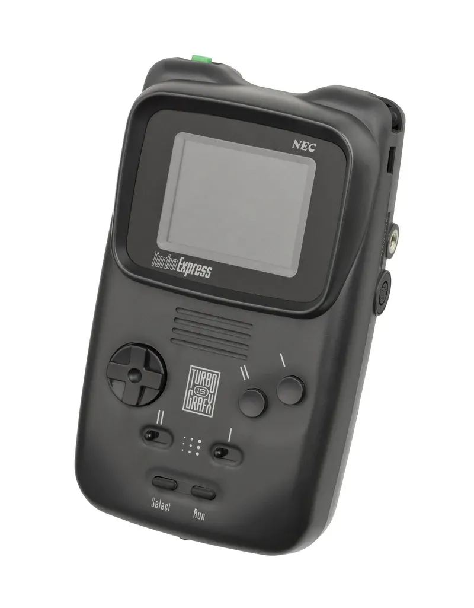

1990 年发布
TurboExpress
掌上版TurboGrafx-16 · 当时最强掌机 · NEC出品
约150万
全球销量(估)
16位
双GPU
2.6寸
屏幕尺寸
$399
首发价格(美元)
📖 历史与背景
1990年，NEC在美国推出TurboExpress——这是TurboGrafx-16（日本称PC Engine）的掌上版本。它的革命性在于：与家用机使用完全相同的HuCard卡带，插上就能玩，不需要单独购买掌机版游戏。
TurboExpress在当时是技术最先进的掌机。2.6寸背光LCD屏幕可以显示512色，远超同年发售的Game Boy（4色灰阶）和次年发售的Game Gear（64色）。它本质上就是一台缩小版的TurboGrafx-16，性能与家用机完全一致。
然而TurboExpress的价格高达399美元——是当时Game Boy（89美元）的4.5倍。加上6节AA电池仅约3小时续航，以及TurboGrafx-16本身市场份额就小，TurboExpress最终未能取得商业成功。
⚙️ 硬件规格
CPU
HuC6280 8位 (7.16MHz)
GPU
HuC6270 + HuC6260 双芯片
屏幕
2.6寸 240×202 背光LCD
色数
同屏512色（库512色）
电池
6节AA电池（约3小时）
兼容
TurboGrafx-16全部卡带
音效
6通道PSG + 立体声
重量
约475g
🎮 经典游戏阵容
Bonk's Adventure
1989 · 动作
TurboGrafx-16看家之作
Bonk's Revenge
1991 · 动作
Bonk系列续作
R-Type
1988 · 射击
经典横版射击游戏
Military Madness
1989 · 战棋
回合制战略经典
Blazing Lazers
1989 · 射击
纵版射击佳作
Neutopia
1989 · 动作RPG
类似塞尔达的冒险
Soldier Blade
1992 · 射击
火枪系列巅峰
Chew-Man-Fu
1990 · 益智
推球解谜创意游戏
🏆 市场表现与影响
- 全球销量：约150万台（估算），远低于同时期的Game Boy
- 价格门槛：399美元的首发价格是致命伤——当时一台Genesis（Mega Drive）才190美元
- 技术领先：虽然商业失败，但TurboExpress是1990年代技术最先进的掌机——背光+512色+与家用机共用卡带的理念超前了整整10年
- 日本版本：在日本以「PC Engine GT」名称发售，价格同样高昂但有一批忠实粉丝
- 收藏价值：由于产量不大且技术独特，品相良好的TurboExpress目前在二手市场价格不菲
💡 趣闻与冷知识
- TurboExpress是史上第一款「掌上家用机」——与家用机共用卡带的设计理念直到2005年的GP2X才再次出现
- TurboExpress的背光LCD屏幕在当时极为先进——Game Boy直到1989年只有灰阶屏，Game Gear 1990年也只有64色
- TurboExpress可以使用TurboGrafx-16的CD-ROM扩展——通过专用外设连接CD-ROM²驱动器，但这在掌机上几乎不实用
- TurboExpress的屏幕存在「残影」问题——LCD响应速度慢，动作快的高速游戏画面会有拖影
- NEC后来还推出了TurboExpress的后续机型「PC Engine LT」——一款带电视调谐器的折叠式便携PC Engine，但产量极少